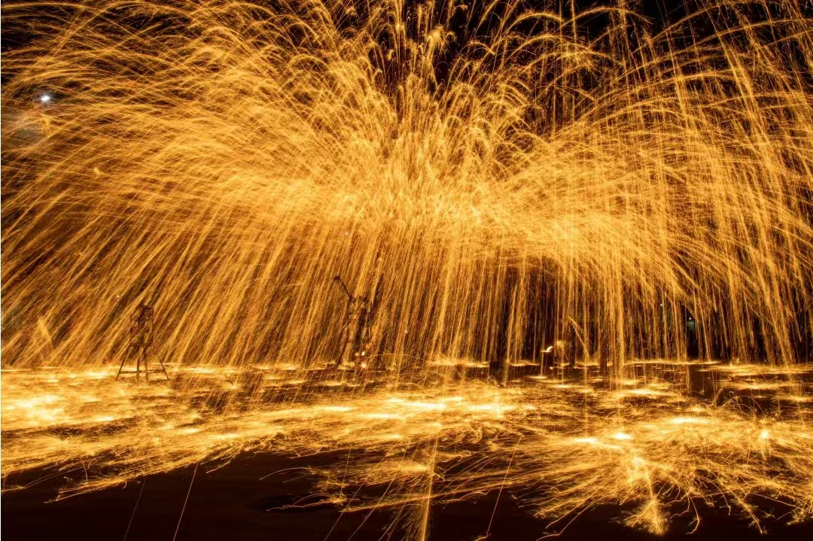
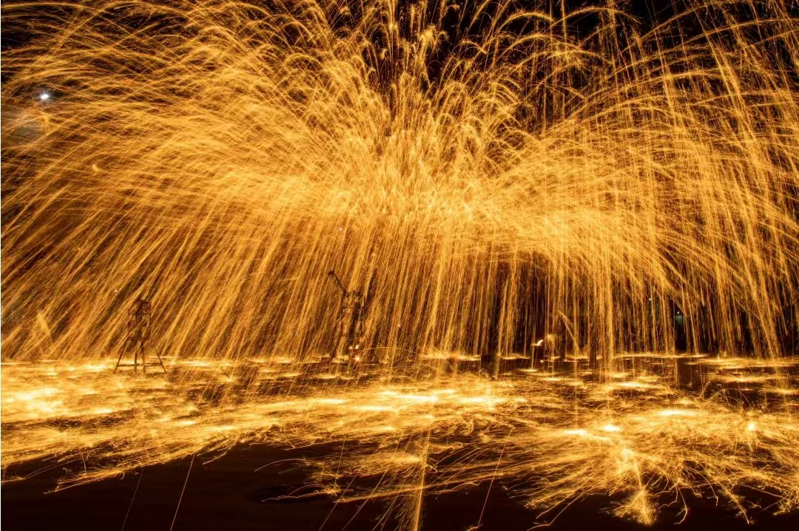
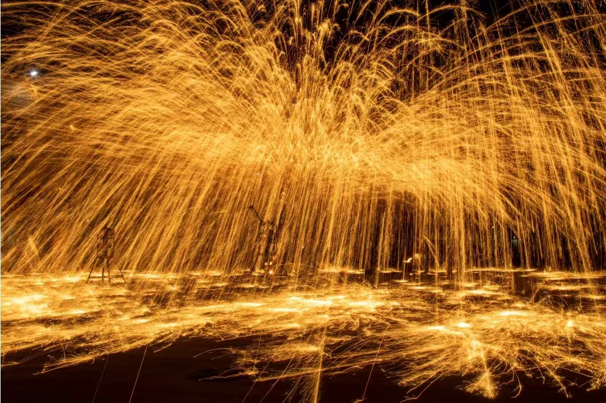
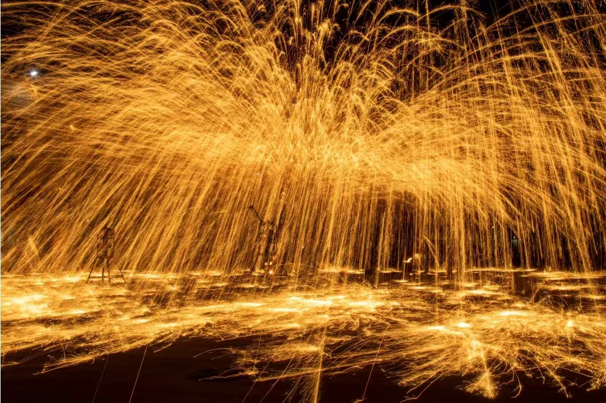

 

节日庆典形式
在重大节日如春节、元宵节期间，打铁花表演是最受欢迎的传统节目之一。表演者头戴葫芦瓢，赤裸上身，手持花棒，在夜空中挥洒出璀璨的铁花。铁水飞溅时形成的金色火树，配合着此起彼伏的鞭炮声，营造出浓厚的节日氛围。特别是在元宵节晚上，打铁花表演更是将节日气氛推向高潮，吸引着成千上万的观众驻足观看。

庙会活动形式
庙会期间的打铁花表演别具特色。表演通常在傍晚开始，当天色渐暗时，打铁花师傅们便开始准备工作。他们在庙会场地中央搭建特制的花棚，顶上铺满新鲜的柳树枝，绑上各式烟花和鞭炮。随着夜幕降临，铁水飞溅，火树银花，与庙会的其他传统活动如民俗表演、小吃展销等相结合，形成了独具特色的文化景观。民俗传承活动形式
为了传承和弘扬这门古老技艺，当地经常举办专门的民俗传承活动。活动中不仅有精彩的打铁花表演，还会设置技艺展示和互动体验环节。老艺人们会现场讲解打铁花的历史渊源、制作工艺和表演技巧，让观众近距离了解这门传统技艺。同时，还会组织年轻人参与学习，通过"师带徒"的方式，确保这项非物质文化遗产能够代代相传。
现代创新表演形式
随着时代发展，打铁花表演也在不断创新。现代表演中融入了音乐、灯光等现代元素，有的还结合了舞龙舞狮等传统表演，创造出更加震撼的视觉效果。表演者们根据不同的主题和场合，设计出各具特色的表演节目，既保留了传统技艺的精髓，又赋予了新的艺术表现形式。